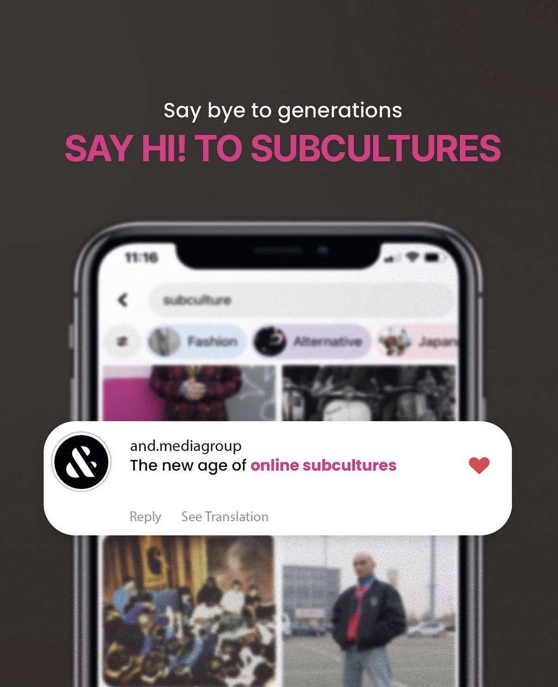
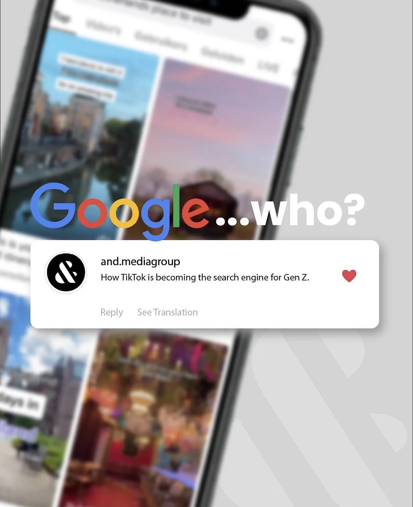
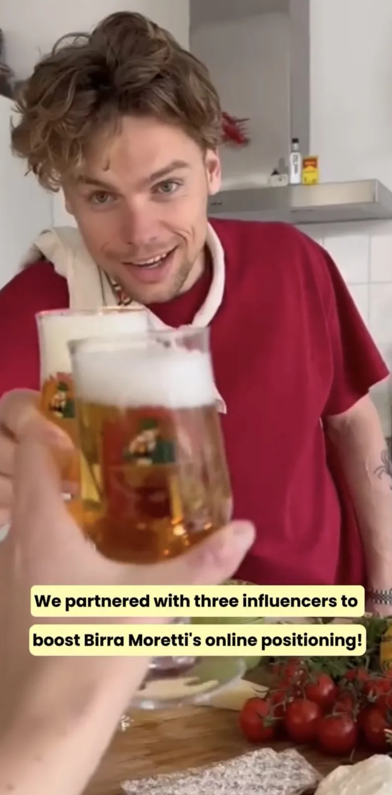
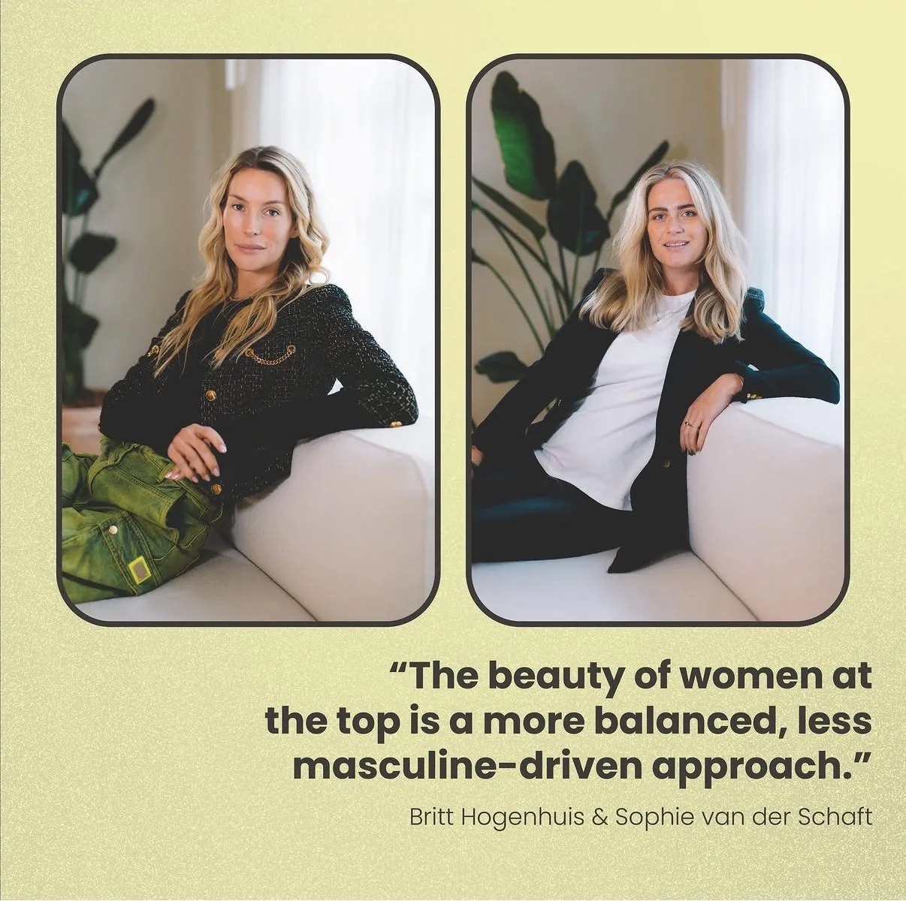
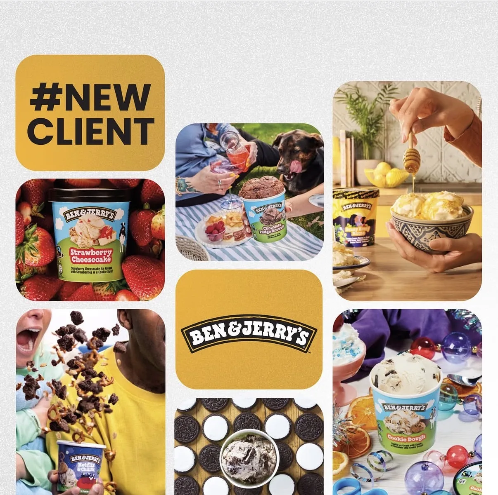
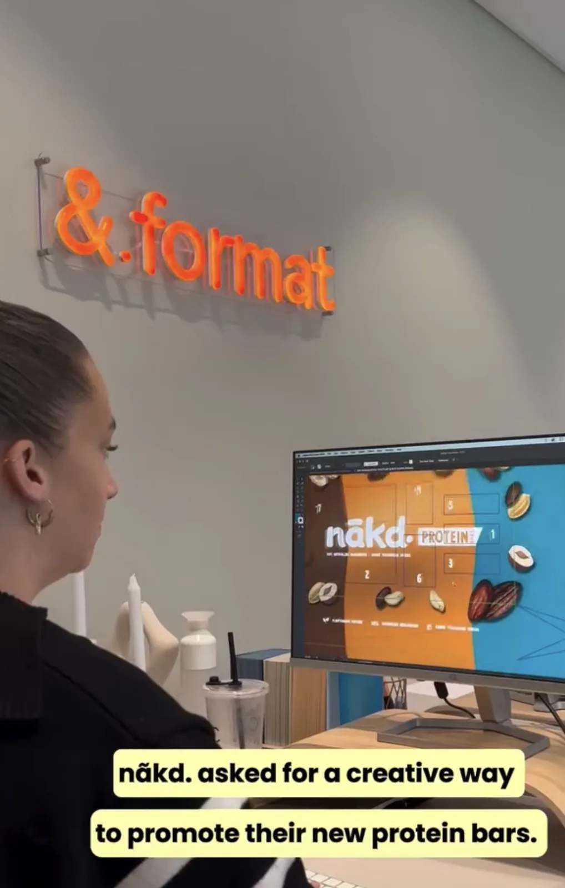
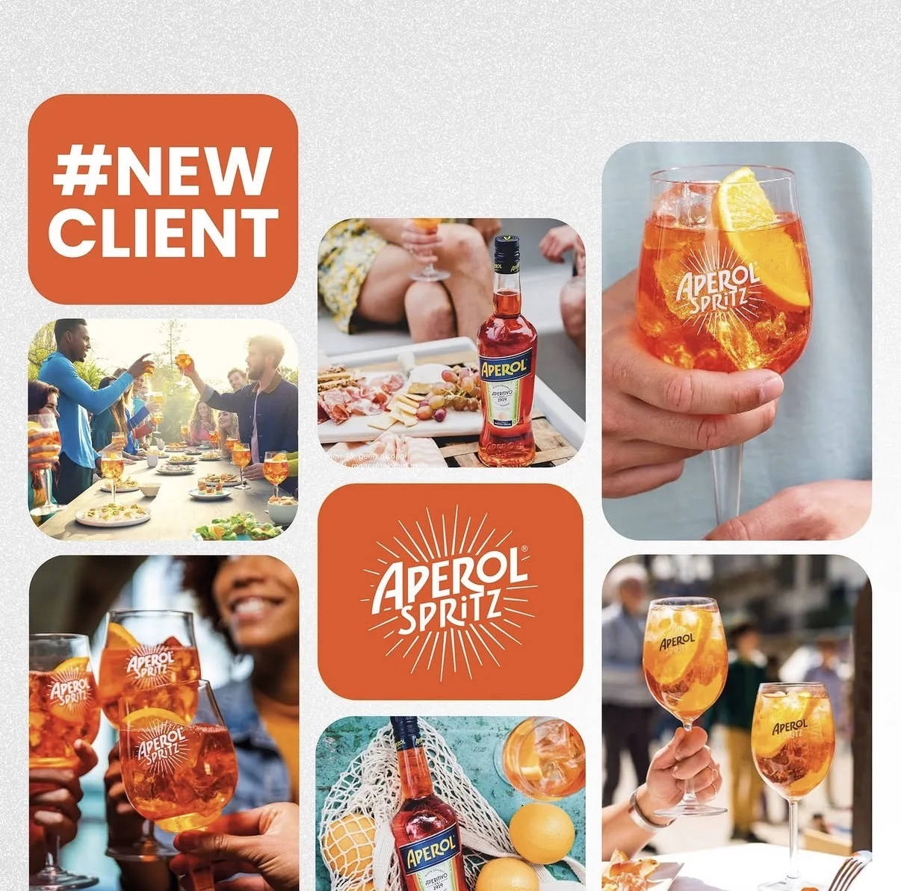

Professional background & competencies.
I'm at my best where strategy meets craft. My strengths sit in creative thinking and problem-solving, which I put to work through photography, video and design as much as through research and writing, and I move comfortably between the analytical and the visual sides of a project. Strong communication ties it together, whether that's presenting findings to stakeholders, briefing a shoot, or writing for an audience.
Outside of work, reading, football and photography keep me curious and give me a wider lens on culture and people, which feeds directly back into how I approach creative and research work. It's this combination, creativity, strategy, photography, video and research, working together rather than in separate lanes, that defines how I work and what I bring to a team.
CommunicationExcellent
TeamworkExcellent
Creative ThinkingGood
Design ThinkingGood
Problem-SolvingGood
Adobe (Creative Suite)Good


Creativity and
content.
This collection showcases social-first content I created from concept to publication. I enjoy turning ideas into engaging visual stories that combine creativity with strategy, demonstrating strong design craft, creative thinking, and an understanding of what resonates on social media. Throughout these projects, I was involved in every stage of the creative process, from developing concepts to shooting, editing, and publishing both video and image-based content.

Knowledge-sharing carousel — “Say bye to generations, say hi to subcultures,” on building connections through shared passions rather than age.
View on Instagram
Knowledge-sharing post: how TikTok is becoming the search engine for Gen Z.
View on Instagram
Reel: partnered with three influencers to boost Birra Moretti’s online positioning.
View on Instagram
The faces behind AndAgencyAmsterdam — celebrating International Women’s Day with founders Britt Hogenhuis & Sophie van der Schaft.
View on Instagram
New client announcement: welcoming Ben & Jerry’s to the agency’s growing portfolio.
View on Instagram
Reel: behind-the-scenes creative work for nãkd.’s protein bar campaign.
View on Instagram
New client announcement: welcoming Aperol Spritz to the agency’s growing portfolio.
View on Instagram